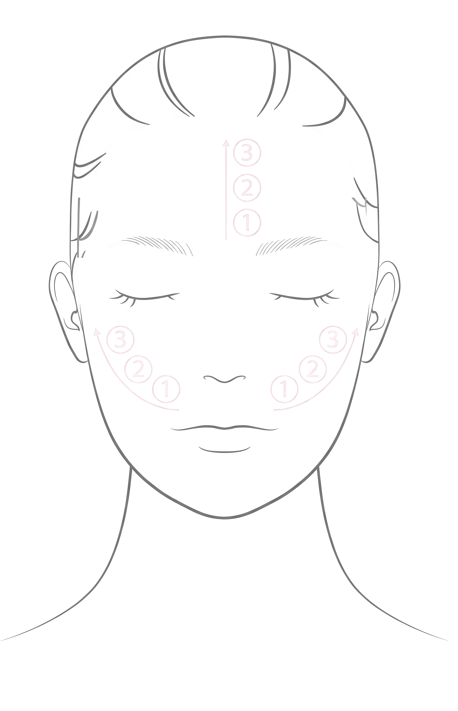
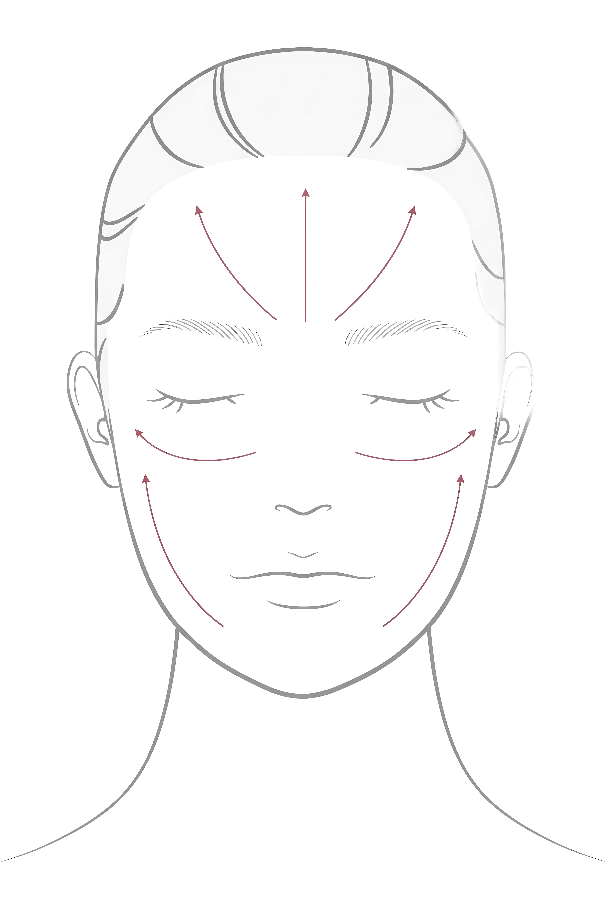
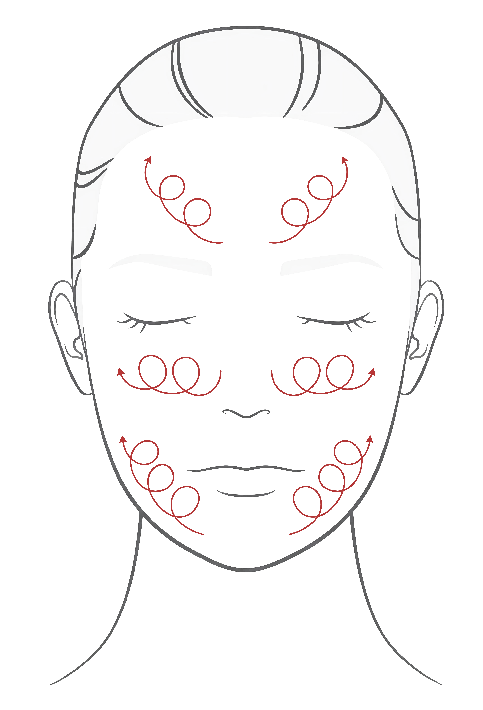

BRITZMEDI CO., LTD.
N E W C H A E
User Manual · 2026

NEWCHAE SHOT
Multi-channel RF · EMS · ELP home beauty device. Professional-grade skin care technology adapted for personal use. Safe output activated upon skin contact.
KCCEFCCGMP
Device Parts
1Electrode Head — Skin Contact Electrode
2Level Indicator — Output Levels 1 / 2 / 3
3Mode Indicator — RF / EMS / ELP
4Power Button — ON/OFF & Level (1/2/3)
5Mode Button (M) — Mode & Vibration
6Charging Port — USB-C
How to Use — 3 Modes
RF

RF Mode
1 MHz · Auto Shot
High-frequency energy for deep skin care and volume management.
- Cleanse face with lukewarm water.
- Apply NEWCHAE cream over treatment area.
- Select RF mode & level.
- Hold on skin — beep signals to move.
- Move inside → outside.
- Auto-off after 10 min.
Max 2 shots per area. Start Level 1.
EMS

EMS Mode
1 KHz · Medium Freq.
Electrical stimulation for skin elasticity and contour management.
- Cleanse face with lukewarm water.
- Apply NEWCHAE cream generously.
- Select EMS mode & level.
- Glide upward: bottom → top, inside → outside.
- Auto-off after 10 min.
Start Level 1. Avoid over-stimulation.
ELP

ELP Mode
5–20 KHz · Multi Freq.
Electroporation for enhanced absorption of active ingredients.
- Cleanse face with lukewarm water.
- Apply NEWCHAE cream generously.
- Select ELP mode & level.
- Massage in small circles, inside → outside.
- Auto-off after 10 min.
Start Level 1. Avoid over-stimulation.
Recommended Cycle Use each mode 2–3 times per week, up to 10 minutes per session.
RF → EMS → ELP → RF → …